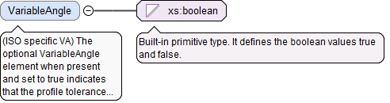
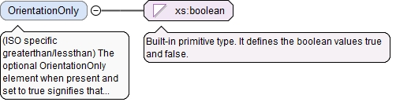

<xs:element name="ToleranceValue" type="LinearValueType"><xs:annotation><xs:documentation>The ToleranceValue element is the tolerance of the profile characteristic.</xs:documentation></xs:annotation></xs:element>
<xs:element name="ToleranceDualValue" type="LinearDualValueType" minOccurs="0"><xs:annotation><xs:documentation>The optional ToleranceDualValue element is the dual tolerance value of the profile characteristic.</xs:documentation></xs:annotation></xs:element>
The optional OuterDisposition element is the outer disposition of the profile characteristic's tolerance zone when the tolerance zone is not symmetric about or is offset from the nominal surface or curve. The value represents the upper tolerance limit when the tolerance zone is expressed as a bi-directional tolerance. For asymmetrically disposed tolerance zones it can range in value from zero when the tolerance zone is completely inside the part material, to the whole tolerance value when the tolerance zone is completely outside the part material. For offset tolerance zones it will have a negative value for a tolerance zone offset inside the part material, or a positive value greater than the tolerance value for a tolerance zone offset outside the part material.
<xs:element name="OuterDisposition" type="LinearValueType"><xs:annotation><xs:documentation>The optional OuterDisposition element is the outer disposition of the profile characteristic's tolerance zone when the tolerance zone is not symmetric about or is offset from the nominal surface or curve. The value represents the upper tolerance limit when the tolerance zone is expressed as a bi-directional tolerance. For asymmetrically disposed tolerance zones it can range in value from zero when the tolerance zone is completely inside the part material, to the whole tolerance value when the tolerance zone is completely outside the part material. For offset tolerance zones it will have a negative value for a tolerance zone offset inside the part material, or a positive value greater than the tolerance value for a tolerance zone offset outside the part material.</xs:documentation></xs:annotation></xs:element>
(ISO specific UZ) The optional UnequallyDisposedZone element is the center of the profile characteristic's tolerance zone when the tolerance zone is not symmetric about or is offset from the nominal surface or curve. For asymmetrically disposed tolerance zones it has a positive value when the center of the tolerance zone is outside the part material, and a negative value when the center of the tolerance zone is inside the part material.
<xs:element name="UnequallyDisposedZone" type="LinearValueType"><xs:annotation><xs:documentation>(ISO specific UZ) The optional UnequallyDisposedZone element is the center of the profile characteristic's tolerance zone when the tolerance zone is not symmetric about or is offset from the nominal surface or curve. For asymmetrically disposed tolerance zones it has a positive value when the center of the tolerance zone is outside the part material, and a negative value when the center of the tolerance zone is inside the part material.</xs:documentation></xs:annotation></xs:element>
(ISO specific OZ) The optional OffsetZone element when present and set to true indicates that the profile tolerance zone can be offset by any unspecified amount.
Diagram
Type
xs:boolean
Properties
content
simple
minOccurs
0
Source
<xs:element name="OffsetZone" type="xs:boolean" minOccurs="0"><xs:annotation><xs:documentation>(ISO specific OZ) The optional OffsetZone element when present and set to true indicates that the profile tolerance zone can be offset by any unspecified amount.</xs:documentation></xs:annotation></xs:element>
(ISO specific VA) The optional VariableAngle element when present and set to true indicates that the profile tolerance zone can be offset by an unspecified angular amount.
Diagram

Type
xs:boolean
Properties
content
simple
minOccurs
0
Source
<xs:element name="VariableAngle" type="xs:boolean" minOccurs="0"><xs:annotation><xs:documentation>(ISO specific VA) The optional VariableAngle element when present and set to true indicates that the profile tolerance zone can be offset by an unspecified angular amount.</xs:documentation></xs:annotation></xs:element>
<xs:element name="SecondCompositeSegmentProfileDefinition" type="CompositeSegmentProfileDefinitionType" minOccurs="0"><xs:annotation><xs:documentation>The optional SecondCompositeSegmentProfileDefinition gives information about the second segment of a composite frame profile characteristic.</xs:documentation></xs:annotation></xs:element>
The optional ThirdCompositeSegmentProfileDefinition gives information about the third segment of a composite frame profile characteristic. This element may be used only if the SecondCompositeSegmentProfileDefinition element is used.
<xs:element name="ThirdCompositeSegmentProfileDefinition" type="CompositeSegmentProfileDefinitionType" minOccurs="0"><xs:annotation><xs:documentation>The optional ThirdCompositeSegmentProfileDefinition gives information about the third segment of a composite frame profile characteristic. This element may be used only if the SecondCompositeSegmentProfileDefinition element is used.</xs:documentation></xs:annotation></xs:element>
The optional FourthCompositeSegmentProfileDefinition gives information about the fourth segment of a composite frame profile characteristic. This element may be used only if the ThirdCompositeSegmentProfileDefinition element is used.
<xs:element name="FourthCompositeSegmentProfileDefinition" type="CompositeSegmentProfileDefinitionType" minOccurs="0"><xs:annotation><xs:documentation>The optional FourthCompositeSegmentProfileDefinition gives information about the fourth segment of a composite frame profile characteristic. This element may be used only if the ThirdCompositeSegmentProfileDefinition element is used.</xs:documentation></xs:annotation></xs:element>
The optional asmPathId attribute is a reference used for locating the id of an assembly path. If the asmPathXId attribute is not used, the asmPathId is a reference to an assembly path in the AsmPaths of the local document. If the asmPathXId is used, the asmPathId is the local id of an external QIF document, and the asmPathXId is a reference to an assembly path in the external QIF document. The assembly path (instantiation chain) unambiguously identifies a model entity within an assembly.
The optional asmPathXId attribute, if used, is a reference to the id of an assembly path in the external document identified by the asmPathId. The asmPathXId must not be used if the asmPathId is not used.
The optional xId attribute is a reference to the id of a QIF object in an external document. A QIF object in an external QIF document can be referenced by using references to two QIF ids: the id of the external document reference of type ExternalQIFDocumentReferenceType found in the local document and the id of the object found in the external document.
Source
<xs:element name="DatumReferenceFrameId" type="QIFReferenceFullType" minOccurs="0"><xs:annotation><xs:documentation>The optional DatumReferenceFrameId element is the QIF id of the datum reference frame for the profile characteristic.</xs:documentation></xs:annotation></xs:element>
(ISO specific greaterthan/lessthan) The optional OrientationOnly element when present and set to true signifies that the DRF associated with this profile characteristic controls only orientation degrees of freedom.
Diagram

Type
xs:boolean
Properties
content
simple
minOccurs
0
Source
<xs:element name="OrientationOnly" type="xs:boolean" minOccurs="0"><xs:annotation><xs:documentation>(ISO specific greaterthan/lessthan) The optional OrientationOnly element when present and set to true signifies that the DRF associated with this profile characteristic controls only orientation degrees of freedom.</xs:documentation></xs:annotation></xs:element>
The id attribute is the QIF id of the characteristic, used for referencing.
Source
<xs:complexType name="ProfileCharacteristicDefinitionBaseType" abstract="true"><xs:annotation><xs:documentation>The ProfileCharacteristicDefinitionBaseType is the abstract base type that defines a profile characteristic.</xs:documentation></xs:annotation><xs:complexContent><xs:extension base="GeometricCharacteristicDefinitionBaseType"><xs:sequence><xs:element name="ToleranceValue" type="LinearValueType"><xs:annotation><xs:documentation>The ToleranceValue element is the tolerance of the profile characteristic.</xs:documentation></xs:annotation></xs:element><xs:element name="ToleranceDualValue" type="LinearDualValueType" minOccurs="0"><xs:annotation><xs:documentation>The optional ToleranceDualValue element is the dual tolerance value of the profile characteristic.</xs:documentation></xs:annotation></xs:element><xs:choice minOccurs="0"><xs:annotation><xs:documentation>This optional compositor provides a choice between the ASME Y14.5 and ISO 1101 implementations of unequal, unilateral or offset profile tolerance zones.</xs:documentation></xs:annotation><xs:element name="OuterDisposition" type="LinearValueType"><xs:annotation><xs:documentation>The optional OuterDisposition element is the outer disposition of the profile characteristic's tolerance zone when the tolerance zone is not symmetric about or is offset from the nominal surface or curve. The value represents the upper tolerance limit when the tolerance zone is expressed as a bi-directional tolerance. For asymmetrically disposed tolerance zones it can range in value from zero when the tolerance zone is completely inside the part material, to the whole tolerance value when the tolerance zone is completely outside the part material. For offset tolerance zones it will have a negative value for a tolerance zone offset inside the part material, or a positive value greater than the tolerance value for a tolerance zone offset outside the part material.</xs:documentation></xs:annotation></xs:element><xs:element name="UnequallyDisposedZone" type="LinearValueType"><xs:annotation><xs:documentation>(ISO specific UZ) The optional UnequallyDisposedZone element is the center of the profile characteristic's tolerance zone when the tolerance zone is not symmetric about or is offset from the nominal surface or curve. For asymmetrically disposed tolerance zones it has a positive value when the center of the tolerance zone is outside the part material, and a negative value when the center of the tolerance zone is inside the part material.</xs:documentation></xs:annotation></xs:element></xs:choice><xs:element name="OffsetZone" type="xs:boolean" minOccurs="0"><xs:annotation><xs:documentation>(ISO specific OZ) The optional OffsetZone element when present and set to true indicates that the profile tolerance zone can be offset by any unspecified amount.</xs:documentation></xs:annotation></xs:element><xs:element name="VariableAngle" type="xs:boolean" minOccurs="0"><xs:annotation><xs:documentation>(ISO specific VA) The optional VariableAngle element when present and set to true indicates that the profile tolerance zone can be offset by an unspecified angular amount.</xs:documentation></xs:annotation></xs:element><xs:element name="SecondCompositeSegmentProfileDefinition" type="CompositeSegmentProfileDefinitionType" minOccurs="0"><xs:annotation><xs:documentation>The optional SecondCompositeSegmentProfileDefinition gives information about the second segment of a composite frame profile characteristic.</xs:documentation></xs:annotation></xs:element><xs:element name="ThirdCompositeSegmentProfileDefinition" type="CompositeSegmentProfileDefinitionType" minOccurs="0"><xs:annotation><xs:documentation>The optional ThirdCompositeSegmentProfileDefinition gives information about the third segment of a composite frame profile characteristic. This element may be used only if the SecondCompositeSegmentProfileDefinition element is used.</xs:documentation></xs:annotation></xs:element><xs:element name="FourthCompositeSegmentProfileDefinition" type="CompositeSegmentProfileDefinitionType" minOccurs="0"><xs:annotation><xs:documentation>The optional FourthCompositeSegmentProfileDefinition gives information about the fourth segment of a composite frame profile characteristic. This element may be used only if the ThirdCompositeSegmentProfileDefinition element is used.</xs:documentation></xs:annotation></xs:element><xs:element name="DatumReferenceFrameId" type="QIFReferenceFullType" minOccurs="0"><xs:annotation><xs:documentation>The optional DatumReferenceFrameId element is the QIF id of the datum reference frame for the profile characteristic.</xs:documentation></xs:annotation></xs:element><xs:element name="OrientationOnly" type="xs:boolean" minOccurs="0"><xs:annotation><xs:documentation>(ISO specific greaterthan/lessthan) The optional OrientationOnly element when present and set to true signifies that the DRF associated with this profile characteristic controls only orientation degrees of freedom.</xs:documentation></xs:annotation></xs:element></xs:sequence></xs:extension></xs:complexContent></xs:complexType>